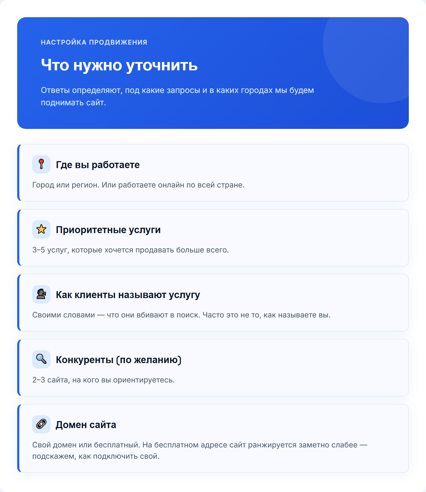
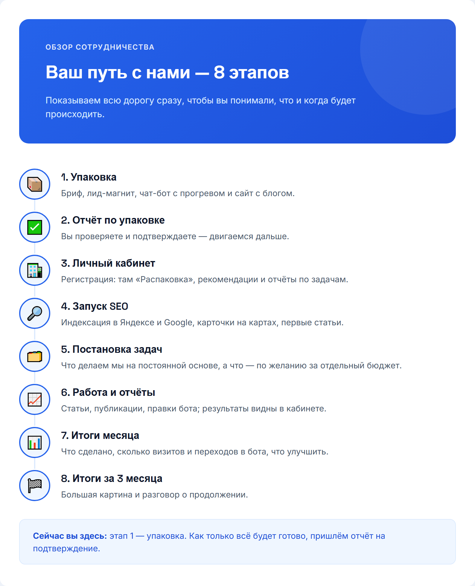
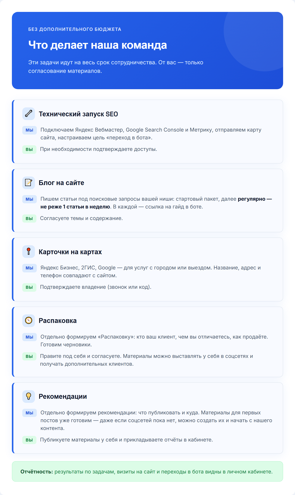

1
Без картинки
/первое_сообщение
Это рабочий чат — здесь будем вести ваш проект от сегодняшнего дня до поставленных задач.
Вести ваш проект будет проектный менеджер {ИМЯ_ПМ} — {НИК_ПМ}.
У {ИМЯ_ПМ} большой опыт — поможет с вопросами и внесёт правки по необходимости.
Рады, что вы с нами 🙏2

/бриф
Ответьте на вопросы ниже — это нужно для точных целевых заявок. Нет ответа или не уверены — просто пропускайте. Можно голосовым. 🏢 О БИЗНЕСЕ 1. Сфера/ниша (напр.: психолог, брокер по новостройкам) 2. Конкретное предложение — что продаёте (напр.: «Продвижение Instagram») 3. Город(а) работы 4. Тип клиента: B2B / B2C / B2G 📊 ПОКАЗАТЕЛИ 5. Сколько клиентов сейчас в месяц (напр.: 5) 6. Желаемая выручка в месяц (напр.: 700 000 ₽) 7. Клиентский цикл (разовая покупка / подписка / долгий проект) 💰 УСЛУГИ И ЦЕНЫ 8. Список услуг с ценами, нумеруйте 8.1, 8.2... Напр.: 8.1 Курс — от 999 ₽, 8.2 Сессия 1.5ч — 7 500 ₽ 👤 АУДИТОРИЯ 9. Портрет идеального клиента (напр.: «Женщины 25-35, Москва») 10. Главная боль аудитории (напр.: «Нет заявок с сайта») 11. Ключевое возражение (напр.: «Дорого») 12. Измеримый результат (напр.: «+40% заявок») 13. УТП (напр.: «Первый месяц бесплатно») 🔗 Ссылки: ВК, ТГ, Instagram, бот, сайт, YouTube/Рутуб
3

/термины
Пара терминов, которые будут встречаться в переписке — коротко объясняем:
4

/путь_клиента
Вот как человек проходит путь от поиска в Яндексе до обращения к вам. Важно: это путь через поисковое продвижение. Заявки приходят не мгновенно, а нарастают по мере того, как сайт набирает позиции.
5
Без картинки
/сайт_отправка
Здравствуйте! @{НИК_КЛИЕНТА}
Сайт:
{ССЫЛКА_НА_САЙТ}
Сайт — главная точка входа: его мы будем продвигать в поиске. Кнопки на сайте и в статьях ведут в Telegram-бота, где человек получает гайд и проходит прогрев. Для активации запустите бота по ссылке ниже:
{DEEP_LINK_БОТА}
Правки вносятся один раз — соберите все пожелания в одно текстовое сообщение (скриншоты и голосовые не принимаются техспециалистом), если потребуется что-то поправить.
Если нужно добавить фото — присылайте ТОЛЬКО ссылкой на Яндекс.Диск с открытым доступом («доступно всем, у кого есть ссылка»), мы извлечём фото оттуда. По-другому техспециалист и программа файлы не принимают.
Также нужно уточнить пару моментов:
1. {ЗАГЛУШКА_1}
2. {ЗАГЛУШКА_2}
Когда напишете все правки, обязательно добавьте фразу, что это всё — так мы поймём, что можно брать правки в работу.6

/упаковка_готова
Готов этап «Упаковка» — все материалы созданы: гайд, бот с прогревом и сайт, настроенный под поисковое продвижение. Пожалуйста, посмотрите отчёт и напишите: «Принимаю» — если всё устраивает, переходим к следующему этапу
7

/платформа_регистрация
Что нужно сделать дальше:
1. Зарегистрируйтесь в личном кабинете по ссылке:
{ССЫЛКА_НА_ПЛАТФОРМУ}
Инвайт-код: {ИНВАЙТ_КОД}
2. После регистрации подтвердите аккаунт через e-mail и пришлите нам логин и пароль — чтобы мы подключили ваш проект.
3. Прикрепите в личном кабинете подписанный акт — без него кабинет остаётся заблокирован.
4. В кабинете вы увидите раздел «Распаковка», рекомендации и отчёты по задачам. Само продвижение сайта ведёт наша команда; от вас — согласования и ответы на вопросы.8
Без картинки
/seo_как_это_работает (вместо /трафик_воронка)
Как это работает:
Мы продвигаем ваш сайт в поиске — в Яндексе и Google — по запросам, которые вводят люди, когда ищут вашу услугу или ответ на свой вопрос. Человек приходит на сайт, видит предложение бесплатного гайда и по кнопке переходит в Telegram-бота. Бот выдаёт гайд и несколько дней прогревает полезными сообщениями. После этого человек сам пишет вам.
Честно о сроках: SEO — не мгновенная реклама. Первые визиты из поиска обычно появляются через 3–6 недель, рост по средним запросам — через 2–4 месяца при регулярных публикациях. Позиции и число заявок гарантировать нельзя: они зависят от конкуренции в вашей нише и регионе. Зато результат накапливается и не пропадает, когда заканчивается бюджет.
Что делаете вы:
1. Согласовываете материалы и отвечаете на наши вопросы
2. Когда человек пишет вам после бота — общаетесь с ним и ведёте к оплате
3. Если нужно быстрее — можно подключить платную рекламу отдельно (список пришлём)
Ваш персональный менеджер — {ИМЯ_ПМ} ({НИК_ПМ}). Поможет с настройками и ответит на вопросы.9

/сроки
Что ожидать и когда — на картинке. Это типовые ориентиры, не обещание: сроки зависят от конкуренции в вашей нише.
10

/прогрев_бота
Так будет работать бот после того, как человек нажал кнопку на сайте. Тексты сообщений согласуем с вами — если что-то захотите изменить, скажите.
11

Скачать файл/seo_вопросы (вместо /трафик_критерии)
Чтобы точно настроить продвижение, уточните, пожалуйста: 1. В каких городах или регионах вы работаете (или онлайн по всей стране)? 2. Какие 3–5 услуг для вас приоритетные? 3. Как ваши клиенты называют эту услугу своими словами — что они вбивают в поиск? 4. 2–3 сайта конкурентов, на которые вы ориентируетесь (по желанию) 5. Есть ли у сайта свой домен? Можно голосовым.
12
Без картинки
/менеджер_знакомство (вместо /трафик_менеджер)
Здравствуйте 👋
Я ваш персональный менеджер — {ИМЯ_ПМ} ({НИК_ПМ}). Начинаем продвигать ваш сайт в поиске.
После регистрации в кабинете пришлите, пожалуйста, сюда логин и пароль.
Первые недели уходят на настройку и индексацию сайта — заявок в это время ждать рано, это нормальный этап. Ориентиры по срокам — на картинке выше.
Отличного дня! 🙂13

Скачать файл/дорожная_карта
Показываем всю дорогу сразу — какие этапы нас ждут от упаковки до итогов за 3 месяца.
14
Без картинки
/видео_кабинет
Прикрепляем короткое видео, как работать в личном кабинете:
{ССЫЛКА_НА_ПЛАТФОРМУ}
Что в видео:
— Раздел «Распаковка» — фундамент: кто ваш клиент, чем вы отличаетесь, как продаёте.
Черновики уже готовы, нужно только поправить под себя.
— Блок рекомендаций — что публиковать и куда, и как прикладывать отчёты, чтобы сайт набирал вес в поиске.
Посмотрите один раз полностью — дальше будет легко ориентироваться самим.
После просмотра:
1. Начните проходить задачи в блоке рекомендаций по порядку
2. Прикладывайте отчёты к выполненным задачам — так быстрее проверим
Вопросы — пишите сюда 🙂15

Скачать файл/задачи_команды
Ставим постоянные задачи по продвижению вашего сайта — их наша команда делает без дополнительного бюджета с вашей стороны на весь срок сотрудничества. От вас нужно только согласовывать содержание — публикуем и ведём мы. Список задач — на картинке. Если всё устраивает, просто подтвердите — и запускаем.
16


/ускорители (вместо /подрядчики)
Если захотите получать заявки быстрее, чем набирает вес SEO, можно параллельно подключить платные каналы — это отдельный бюджет, подключаем только по вашему желанию. Список и цены — на картинке. Платная реклама ведёт на тот же сайт и в того же бота, так что всё работает вместе. Пишите — согласуем и запустим.
17
Без картинки
Сценарий видео /seo_как_это_работает (1–1,5 мин)
1. Экран: поисковая выдача по запросу вашей ниши. «Люди ищут услугу в Яндексе. Наша задача — чтобы они находили ваш сайт.» 2. Экран: статья на сайте с блоком «Скачать гайд». «Статья отвечает на вопрос человека, а в конце — предложение забрать гайд.» 3. Экран: переход в Telegram, бот выдаёт гайд. «Кнопка ведёт в бота, он выдаёт гайд бесплатно.» 4. Экран: серия прогрева в боте. «Несколько дней бот присылает полезные сообщения.» 5. Экран: кнопка «Написать». «Когда человек готов, он пишет вам.» 6. Итог: «SEO набирает силу постепенно: первые визиты — через 3–6 недель, рост — через 2–4 месяца. Мы никому не обещаем мгновенных заявок.»